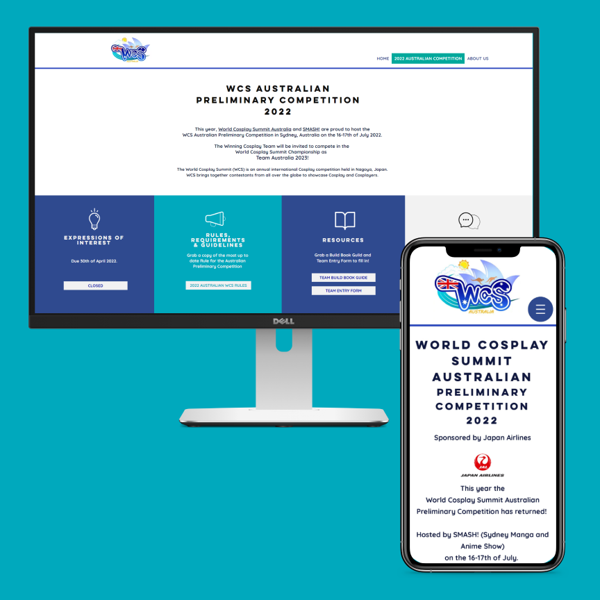
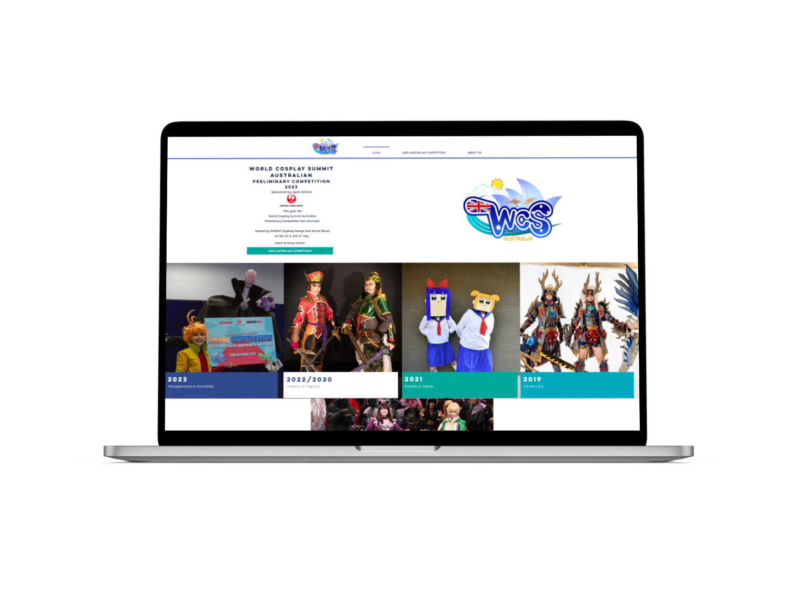

Designing a website for Australia's premier cosplay organisation — a vibrant space that warmly accommodates their passionate community.
Embracing World Cosplay Summit Australia's unique branding and utilising the capabilities of the Wix platform, our goal was clear: to fashion an online space that doesn't just catch the eye, but warmly accommodates the vibrant cosplay community.
The task encompassed reflecting WCSA's identity and event highlights while ensuring seamless user navigation and interactions — all built to be maintained by a team of passionate volunteers.
Working alongside the World Cosplay Summit Australia (WCSA), I witnessed the dedication of this not-for-profit association firsthand. Comprising a team of passionate volunteers, WCSA is driven by the shared goal of showcasing the incredible talents of cosplayers across Australia — offering them a chance to shine on a global platform.
During the project's inception, thorough research laid the groundwork for the website design — analysing branding guidelines, aligning elements like logo and colour scheme, and understanding cosplay culture and community preferences to ensure design alignment.
With the WCSA team, the website's structure was defined, emphasising key sections:

As the visual design took shape, it entailed a harmonious integration of WCSA's branding — leveraging their colour palette, typography, and logo in a consistent manner. Imagery selection resonated deeply with the cosplay community, capturing the essence of creativity and excitement that defines WCSA's culture.
The homepage was crafted around a dynamic hero section that immediately immerses visitors in the event's atmosphere through captivating cosplay visuals. Critical content — upcoming events, latest news, and featured cosplays — was thoughtfully highlighted for swift access.

Leveraging Wix's intuitive interface, WCSA can effortlessly update content, keeping the site current without needing a developer. Wix App Market integration streamlined tasks like event management and social media. The responsive design ensures a consistent experience across all devices.
The site is now live and actively used by the WCSA community.